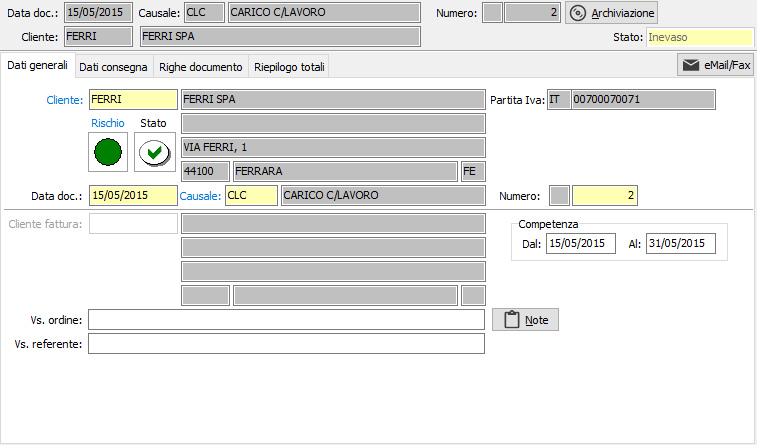
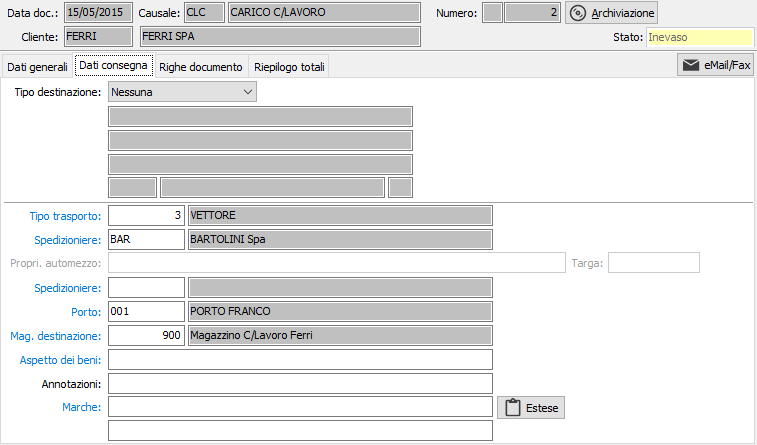
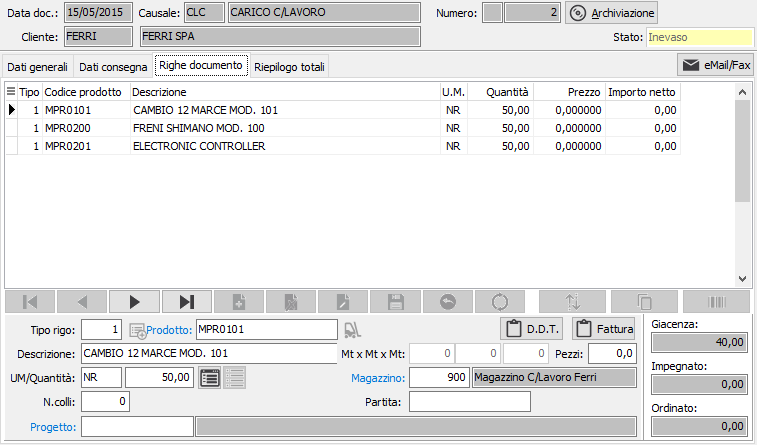

Gestione Ddt di ingresso
La procedura consente l’acquisizione dei Ddt di carico dei materiali forniti dal cliente; le modalità di inserimento sono del tutto simili a quelle previste per l’inserimento dei normali Ddt di vendita.
In fase di inserimento è proposta la causale preferenziale inserita in OS1Config, per questo tipo di documento sono accettate solo causali Ddt previste per l’inserimento di Ddt di tipo “Ddt di ingresso conto lavoro attivo” le sole visualizzate tramite lo zoom sul campo Causale.

Viene proposto in automatico come magazzino di destinazione il magazzino del cliente, dalla tabella Magazzini il codice del magazzino su cui è presente il cliente intestatario del Ddt, e non è possibile proseguire con l’inserimento se non viene specificato il magazzino di destinazione che sarà utilizzato come magazzino di carico dei materiali inviati dal cliente.

L'inserimento delle righe procede come un normale Ddt.

In fase di registrazione in base alla causale di magazzino specificata sulla causale del documento sarà effettuata la registrazione del movimento di magazzino relativo.
I materiali che il cliente deve fornire sono tenuti sotto controllo attraverso l’apposita scelta Analisi materiali forniti.
Tutti i Ddt del conto lavoro attivo sono visibili nelle analisi presenti nella gestione dei Documenti di trasporto indicando la tipologia di Ddt da visualizzare, con la possibilità di indicare se includere o escludere tali Ddt. E’ disponibile un report a stampa del documento.